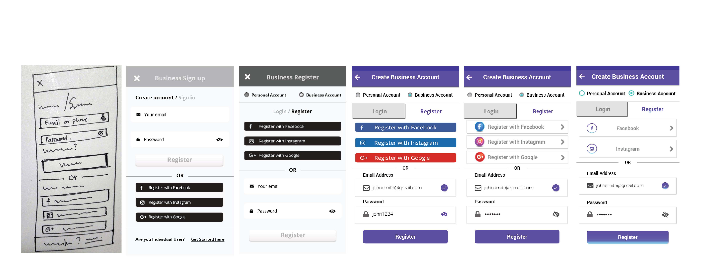
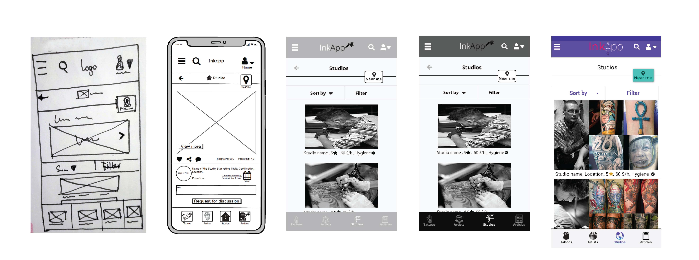

Ink Tank / UX - UI project
All about the tattoo industry in one app!
Getting a tattoo is an incredibly personal experience.There are a few apps available in the marketplace but neither seems to address the complexity and emotional element of finding the right design and tattoo artist.
For this project, we will explore ways to pick apart an interesting and relatively unexplored problem space and design a better solution for our target audience through research, analysis, and best practices in UX design.
The key to the success of the Ink Tank is to focus on competitors frictions and try to improve our app. Additionally, by following the user interface principles we will gain clarity and recognizable from our audience.
Problems we try to solve with this web app
- Individuals tattoo artists and studios are to a great extent available on the market.
- It is very hard for the customers to search valuable reviews and forums, experience and certifications of the artists, pricing lists, cleanliness standards of the tattoo studio.
- There is also a lack of instruction on how users to distinguish the most friendly inks for the human body.
Ink Tank Strategy

- This is a web app with advanced mobile capabilities and extra features for easier and quicker user navigation.
- Through our website, we will engage users loyalty with our product capabilities and our particular features.
- The target audience of our project is from ages 18-40 years old who are enthusiastic about the tattoo industry.
Ideation
- Onboarding page (Video with illustrations that shows the most important features of the app)
- Guidelines in eight steps for Tattoo Studios and Artists
- Find the nearest tattoo studio globally
- Opportunity for tattoo lovers to save and get inspiration of tattoo designs
- Filter feature for tattoo lovers to search for tattoo design by Size, Style, Color, Celebrities
- Filter feature for tattoo lovers to search for tattoo studio by Style, Location, Price, Reviews
- View availability and book online appointment with the Studio
Competitor Analysis
I started out with a competitor analysis to understand where my product stands in the market, where the competitors are and which marketing strategies they are using.
The two main competitors I have analysed for this project were Tattoodo and MooAppMaster.
The SWOT analysis was the useful technique I have used to understand the competitors's Strengths and Weaknesses and to identify both the opportunities and potential threats for my product.
Ink Tank Research Methods
Creating a great survey is like designing a great user experience with the user to be in the center of the process. I have conducted overall four interviews that were all advantageous for my Ink Tank app research. The average target group is at 28 years old. The duration for each session lasted on average about 15 min. From all the interviewees I end up that they are not using any web or native app in order to have quicker results for the tattoo industry.
More precisely,the interviewed users had the following characteristics:
- Two individuals had from one until four tattoos
- One tattoo practitioner with 6 years working experience
- One tattoo secretary who has been working in the field for more than 5 years
Agile User Personas / Mental Models
The User personas are fictional characters based on user research that helped me to understand the needs, goals and motivations of the project's target audience. For this project I have created the following three User Personas:
- Kimon / Tattoo Artist. For tattoo artist users who want to promote their business globally.
- Eleni / The Niewbies. For individual users who need inspiration for their tattoo designs and potential tattoo.
- Ivana / The Cover-ups. For individual users who are looking for tattoo practioner reviews that can book an online reservation.
Digital Open Sort Cards
- At this stage of the Ink Tank, I conducted an open Sort Card technique in order to evaluate and refine my sitemap. This methodology helps me to understand how users intuitive navigate with my website structure.
- More precisely, I used a digital test with the OptimalSort app with 5 participants from three different locations. ( Greece, Denmark, Netherlands) The average time spent from each participant was 14.55 min.
Similarity Matrix
- All cards related to Tattoos, Studios, and Account are grouped clearly together from the majority of the participants
- From Similarity Matrix results I spotted that the page for Business has been categorized together with Tattoo Studios & Artists. Ιt is obvious from the analysis that the participants could not understand what the Business page is about
Dendrograms
- The Best Merge Method (BMM) from the Dendogram technique makes assumptions with a small number of participants.
- Considering the BMM algorithm results for the Ink Tank, we can see that 80% of the participants agree on grouping the same cards.
Improvements of the Sitemap
- The sitemap is a visual list of my website content that allows the users to navigate through the site.
- Following the Card Sorting sessions with real-time users I have gained crusial insights about the architecture of my site.
Old version Sitemap
New version Sitemap
Prototyping / Low to Mid Fidelity Wireframes
The low fidelity wireframes are typically a paper sketches of the project user flow, helped me to quickly and zero costly design the user navigation. I have created three different user flow designed with a first Mobile approach for both mobile and desktop devices.
- At this early stage I map out the information architecture of the app by using low fidelity wireframes
- I continued the design of InkTank created the mid fidelity prototypes with Balsamiq Software and tested with real-time users by using clickable interacting tools
Affinity map
I have completed the Usability Testing methodology with 5 participants of moderated sessions. The tests were consisted from a script with three tasks, a device recorder, a laptop or smartphone and a peaceful environment.
- Moderate Usability Test with real-time users to analyze the functionality of the Ink Tank
- The Affinity map is the tool I used to collect and group data gathered from the Usability Test
- The goal of this test is to take a look at the functionality, usability, desirability, and accessibility of the app .
UI Toolkit elements of the InkTank in one Library
"Reusable components for consistent UI applications"
The InkTank library componnents consists from:
- Material Design Guidelines
- 12 column grid system for responsive interfaces
- UI components like buttons, Icons, Calendar design, Input Field Forms
- The Ink Tank color pallete with Primary and Secondary colors
- The Hierarchy of the Typography as well as the Font style and weight
Polishing the Design
The Usability testing helped me for the following improvements:
- Increased the calendar button into 40 x 40 px finger size
- Changed the button size, with a larger button
- Changed the Input fields content by following guides of Best practices UX validation forms
- Changed the design of the logo and placed it center at the top of the screen
- Add purple color that is associated with spirituality, fulfillment, inspiration, calmness. All these aspects are related to the tattoo culture
- Increased the text size for better readability
- Changed the Titles with new clear content
Registration Screen
Tattoo-Studio Screen
Create Business Account Screen
Save tattoo design to Favorites
High Fidelity Prototypes
For this final stage I have created 3 User Flows:
- Entry point: Onboarding page
- Successful point: The user creates a business profile in 7 steps
- Entry point: Home page
- Successful point:Book online tattoo reservation with the tattoo-studio
- Entry point: Onbording page
- Successful point: Tattoo design is saved to Favorites